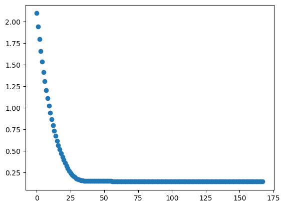

import numpy as np
import matplotlib.pyplot as plt
import pandas as pd
from sklearn.model_selection import train_test_split
from sklearn.preprocessing import StandardScaler, LabelEncoder
from sklearn.neural_network import MLPRegressor
from sklearn.metrics import accuracy_score
import matplotlib.pyplot as plt
Untitled
csv_file_path = 'Placement_Data_Full_Class.csv'
df = pd.read_csv(csv_file_path)
#df['salary'] = df['salary'].fillna(0)
print(df.head())
df.shape sl_no gender ssc_p ssc_b hsc_p hsc_b hsc_s degree_p \
0 1 M 67.00 Others 91.00 Others Commerce 58.00
1 2 M 79.33 Central 78.33 Others Science 77.48
2 3 M 65.00 Central 68.00 Central Arts 64.00
3 4 M 56.00 Central 52.00 Central Science 52.00
4 5 M 85.80 Central 73.60 Central Commerce 73.30
degree_t workex etest_p specialisation mba_p status salary
0 Sci&Tech No 55.0 Mkt&HR 58.80 Placed 270000.0
1 Sci&Tech Yes 86.5 Mkt&Fin 66.28 Placed 200000.0
2 Comm&Mgmt No 75.0 Mkt&Fin 57.80 Placed 250000.0
3 Sci&Tech No 66.0 Mkt&HR 59.43 Not Placed NaN
4 Comm&Mgmt No 96.8 Mkt&Fin 55.50 Placed 425000.0 (215, 15)df = df.dropna()
# Convert categorical variables to numerical values
le = LabelEncoder()
df['gender'] = le.fit_transform(df['gender'])
df['ssc_b'] = le.fit_transform(df['ssc_b'])
df['hsc_b'] = le.fit_transform(df['hsc_b'])
df['hsc_s'] = le.fit_transform(df['hsc_s'])
df['degree_t'] = le.fit_transform(df['degree_t'])
df['workex'] = le.fit_transform(df['workex'])
df['specialisation'] = le.fit_transform(df['specialisation'])
df['status'] = le.fit_transform(df['status'])
X = df.drop('salary', axis=1)
y = df['salary']
# Convert target variable (salary) into categories
y = pd.cut(y, bins=[0, 100000, 200000, 300000, 400000, np.inf], labels=[0, 1, 2, 3, 4])
X_train, X_test, y_train, y_test = train_test_split(X, y, test_size=0.25)
scaler = StandardScaler()
X_train = scaler.fit_transform(X_train)
X_test = scaler.transform(X_test)import random
random.seed(10)
model1 = MLPRegressor(hidden_layer_sizes=[32,32],activation='identity',solver='lbfgs',tol=10**(-6),max_iter=1000,n_iter_no_change=50)
model2 = MLPRegressor(hidden_layer_sizes=[32,32],activation='identity',solver='sgd',tol=10**(-6),max_iter=1000,n_iter_no_change=50)
model3 = MLPRegressor(hidden_layer_sizes=[32,32],activation='identity',solver='adam',tol=10**(-6),max_iter=1000,n_iter_no_change=50)
model4 = MLPRegressor(hidden_layer_sizes=[32,32],activation='logistic',solver='lbfgs',tol=10**(-6),max_iter=1000,n_iter_no_change=50)
model5 = MLPRegressor(hidden_layer_sizes=[32,32],activation='logistic',solver='sgd',tol=10**(-6),max_iter=1000,n_iter_no_change=50)
model6 = MLPRegressor(hidden_layer_sizes=[32,32],activation='logistic',solver='adam',tol=10**(-6),max_iter=1000,n_iter_no_change=50)
model7 = MLPRegressor(hidden_layer_sizes=[32,32],activation='tanh',solver='lbfgs',tol=10**(-6),max_iter=1000,n_iter_no_change=50)
model8 = MLPRegressor(hidden_layer_sizes=[32,32],activation='tanh',solver='sgd',tol=10**(-6),max_iter=1000,n_iter_no_change=50)
model9 = MLPRegressor(hidden_layer_sizes=[32,32],activation='tanh',solver='adam',tol=10**(-6),max_iter=1000,n_iter_no_change=50)
model10 = MLPRegressor(hidden_layer_sizes=[32,32],activation='relu',solver='lbfgs',tol=10**(-6),max_iter=1000,n_iter_no_change=50)
model11 = MLPRegressor(hidden_layer_sizes=[32,32],activation='relu',solver='sgd',tol=10**(-6),max_iter=1000,n_iter_no_change=50)
model12 = MLPRegressor(hidden_layer_sizes=[32,32],activation='relu',solver='adam',tol=10**(-6),max_iter=1000,n_iter_no_change=50)
regr1 = model1.fit(X_train, y_train)
regr2 = model2.fit(X_train, y_train)
regr3 = model3.fit(X_train, y_train)
regr4 = model4.fit(X_train, y_train)
regr5 = model5.fit(X_train, y_train)
regr6 = model6.fit(X_train, y_train)
regr7 = model7.fit(X_train, y_train)
regr8 = model8.fit(X_train, y_train)
regr9 = model9.fit(X_train, y_train)
regr10 = model10.fit(X_train, y_train)
regr11 = model11.fit(X_train, y_train)
regr12 = model12.fit(X_train, y_train)c:\Users\uriso\anaconda3\lib\site-packages\sklearn\neural_network\_multilayer_perceptron.py:549: ConvergenceWarning: lbfgs failed to converge (status=1):
STOP: TOTAL NO. of ITERATIONS REACHED LIMIT.
Increase the number of iterations (max_iter) or scale the data as shown in:
https://scikit-learn.org/stable/modules/preprocessing.html
self.n_iter_ = _check_optimize_result("lbfgs", opt_res, self.max_iter)
c:\Users\uriso\anaconda3\lib\site-packages\sklearn\neural_network\_multilayer_perceptron.py:692: ConvergenceWarning: Stochastic Optimizer: Maximum iterations (1000) reached and the optimization hasn't converged yet.
warnings.warn(
c:\Users\uriso\anaconda3\lib\site-packages\sklearn\neural_network\_multilayer_perceptron.py:692: ConvergenceWarning: Stochastic Optimizer: Maximum iterations (1000) reached and the optimization hasn't converged yet.
warnings.warn(
c:\Users\uriso\anaconda3\lib\site-packages\sklearn\neural_network\_multilayer_perceptron.py:692: ConvergenceWarning: Stochastic Optimizer: Maximum iterations (1000) reached and the optimization hasn't converged yet.
warnings.warn(
c:\Users\uriso\anaconda3\lib\site-packages\sklearn\neural_network\_multilayer_perceptron.py:692: ConvergenceWarning: Stochastic Optimizer: Maximum iterations (1000) reached and the optimization hasn't converged yet.
warnings.warn(
c:\Users\uriso\anaconda3\lib\site-packages\sklearn\neural_network\_multilayer_perceptron.py:692: ConvergenceWarning: Stochastic Optimizer: Maximum iterations (1000) reached and the optimization hasn't converged yet.
warnings.warn(
c:\Users\uriso\anaconda3\lib\site-packages\sklearn\neural_network\_multilayer_perceptron.py:692: ConvergenceWarning: Stochastic Optimizer: Maximum iterations (1000) reached and the optimization hasn't converged yet.
warnings.warn(y_pred1 =model1.predict(X_test)
y_pred1 = np.clip(np.round(y_pred1).astype(int), 0, 4)
accuracy1 = accuracy_score(y_test, y_pred1)
y_pred2 =model2.predict(X_test)
y_pred2 = np.clip(np.round(y_pred2).astype(int), 0, 4)
accuracy2 = accuracy_score(y_test, y_pred2)
y_pred3 =model3.predict(X_test)
y_pred3 = np.clip(np.round(y_pred3).astype(int), 0, 4)
accuracy3 = accuracy_score(y_test, y_pred3)
y_pred4 =model4.predict(X_test)
y_pred4 = np.clip(np.round(y_pred4).astype(int), 0, 4)
accuracy4 = accuracy_score(y_test, y_pred4)
y_pred5 =model5.predict(X_test)
y_pred5 = np.clip(np.round(y_pred5).astype(int), 0, 4)
accuracy5 = accuracy_score(y_test, y_pred5)
y_pred6 =model6.predict(X_test)
y_pred6 = np.clip(np.round(y_pred6).astype(int), 0, 4)
accuracy6 = accuracy_score(y_test, y_pred6)
y_pred7 =model7.predict(X_test)
y_pred7 = np.clip(np.round(y_pred7).astype(int), 0, 4)
accuracy7 = accuracy_score(y_test, y_pred7)
y_pred8 =model8.predict(X_test)
y_pred8 = np.clip(np.round(y_pred8).astype(int), 0, 4)
accuracy8 = accuracy_score(y_test, y_pred8)
y_pred9 =model9.predict(X_test)
y_pred9 = np.clip(np.round(y_pred9).astype(int), 0, 4)
accuracy9 = accuracy_score(y_test, y_pred9)
y_pred10 =model10.predict(X_test)
y_pred10 = np.clip(np.round(y_pred10).astype(int), 0, 4)
accuracy10 = accuracy_score(y_test, y_pred10)
y_pred11 =model11.predict(X_test)
y_pred11 = np.clip(np.round(y_pred11).astype(int), 0, 4)
accuracy11 = accuracy_score(y_test, y_pred11)
y_pred12 =model12.predict(X_test)
y_pred12 = np.clip(np.round(y_pred12).astype(int), 0, 4)
accuracy12 = accuracy_score(y_test, y_pred12)
data = {'Activation Function\solver': ['identity', 'logistic', 'tanh', 'relu'],
'lbfgs': [accuracy1,accuracy4, accuracy7, accuracy10],
'sgd': [accuracy2, accuracy5, accuracy8, accuracy11],
'adam': [accuracy3, accuracy6, accuracy9, accuracy12]}
dff = pd.DataFrame(data)
dff.set_index('Activation Function\solver', inplace=True)
print(dff) lbfgs sgd adam
Activation Function\solver
identity 0.756757 0.756757 0.756757
logistic 0.540541 0.756757 0.702703
tanh 0.540541 0.540541 0.405405
relu 0.432432 0.675676 0.459459Method
We explore various combinations of activation functions and solvers in MLPRegressor to predict salary categories from a given dataset. First preprocess the dataset by removing missing values, encoding categorical features, and scaling the data. The target variable salary is then divided into five different bins (0-100000, 100000-200000, 200000-300000, 30000-400000, 400000-infinty). After splitting the dataset into training and testing sets, MLPRegressor models were trained using different combinations of activation functions (identity, logistic, tanh, and relu) and solvers (lbfgs, sgd, and adam). Predictions for each combination are then made on the test set and rounded to the nearest integer. The accuracy of each combination is calculated by comparing the predicted salary category with the actual salary category in the test set.
Conclusion
From the results it is evident that the combination of activation=‘identity’ and the solvers ‘lbfgs’, ‘sgd’ and ‘adam’ produces the highest accuracy of 0.7567567567567568. This shows that the “identity” activation function using any of the three solvers performs better at predicting salary categories based on a given dataset. On the other hand, the combination of activation=‘tanh’ and solver=‘adam’ resulted in the lowest accuracy of 0.40540540540540543, indicating that it may not be suitable for this dataset or for predicting salary categories. Overall, the code provides insight into how different activation functions and solvers affect the performance of an MLPRegressor model on a given dataset, which can help us determine the best combination for predicting salary categories.
Visualize fitting history
# print(regr.validation_scores_)
fig, ax = plt.subplots()
# training log-loss
ax.plot(regr3.loss_curve_,"o")
plt.show()
The accuracy of this model is around 75%. The model uses activation=‘identity’, the hyperbolic tan function, solver=‘adam’ stochastic gradient descent. This figure shows the loss curve of “MLPRegressor” during training. The loss curve represents the error between the model prediction and the true target value as a function of iterations. The model stabilizes after about 25 iterations.